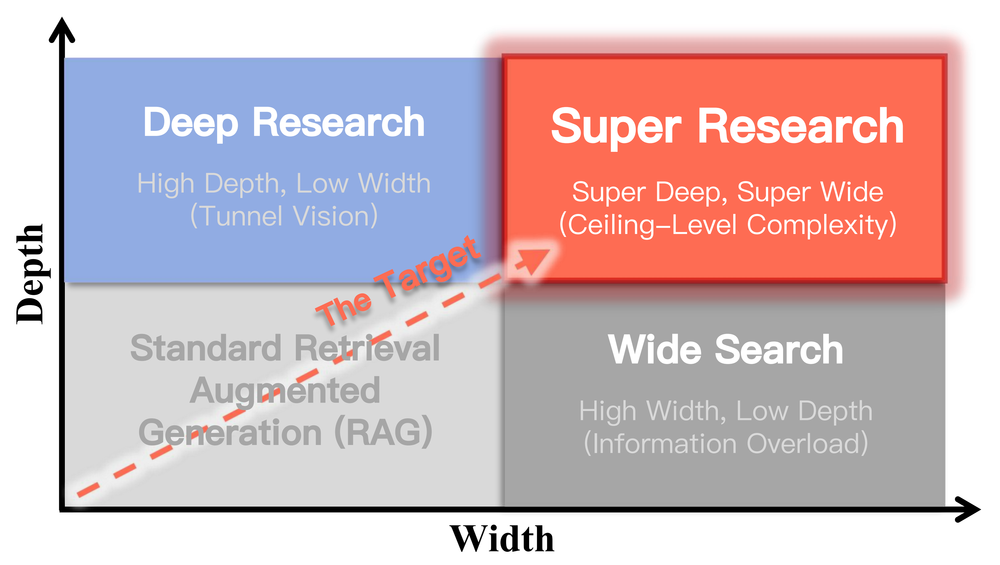

arXiv 2026 First author
Super Research
Answering Highly Complex Questions with Large Language Models through Super Deep and Super Wide Research
A benchmark for complex autonomous research through deep investigation and broad evidence gathering.